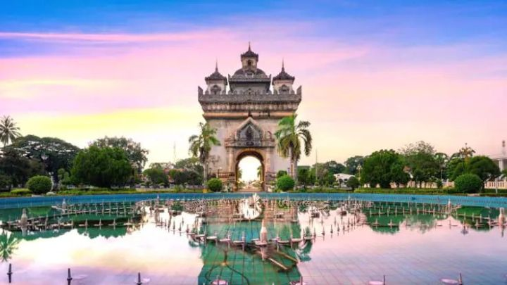

Cultural Immersion Tour
Immerse yourself in the rich culture of diverse regions. Participate in traditional music, dance, and festivals as part of this 7-day tour. This journey is designed for those looking to explore and engage with local communities and their heritage.
Tour Overview
Experience the vibrant culture through hands-on activities, community interactions, and traditional ceremonies. From village visits to engaging in local arts, this tour will enrich your understanding of different lifestyles and traditions.
Tour Highlights
- Participate in a traditional cooking class.
- Attend a local festival with music and dance performances.
- Explore local markets and learn about regional crafts.
- Visit historical sites with knowledgeable guides.
- Enjoy homestays with local families.
Day-by-Day Itinerary

Day 1: Arrival & Welcome Ceremony
Arrive at your destination and enjoy a welcome ceremony featuring local music and dance. Settle into your accommodation and prepare for the exciting week ahead.
Day 2: Village Exploration
Visit a nearby village to engage with local artisans. Participate in craft workshops and learn about traditional methods.
Day 3: Culinary Delights
Take part in a cooking class where you will learn to prepare traditional dishes using local ingredients. Enjoy the meal you created together!
Day 4: Festival Day
Experience a local festival filled with traditional performances, food stalls, and cultural displays. Join in the celebrations with the community.
Day 5: Historical Sightseeing
Visit significant historical sites with expert guides who will share stories and insights about the region's heritage.
Day 6: Community Service Project
Give back to the community by participating in a local service project. Help with environmental efforts or community development initiatives.
Day 7: Departure & Farewell
Reflect on your journey during a farewell brunch with your fellow travelers and hosts. Depart with memories and friendships from your adventure.
Pricing & Inclusions
Price: ₹2000 per person (all-inclusive)
- Accommodation in comfortable lodges and homestays
- All meals and beverages
- Daily guided activities and excursions
- Airport transfers and local transportation
- Travel insurance